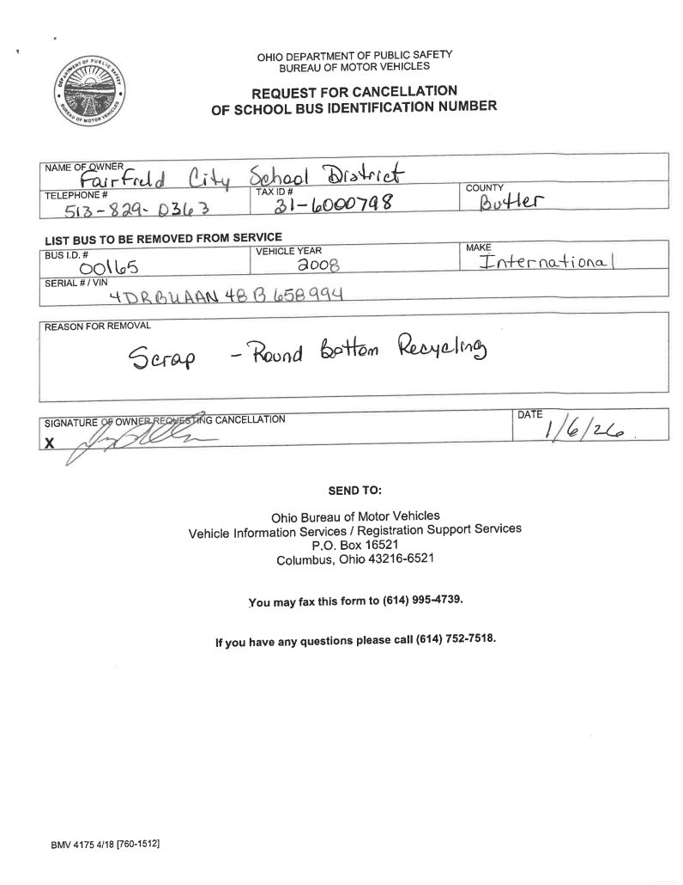
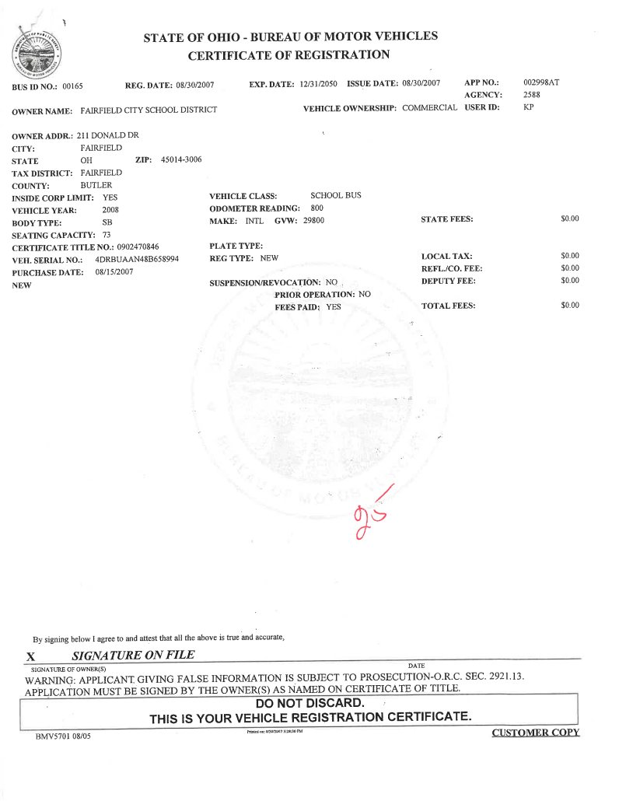
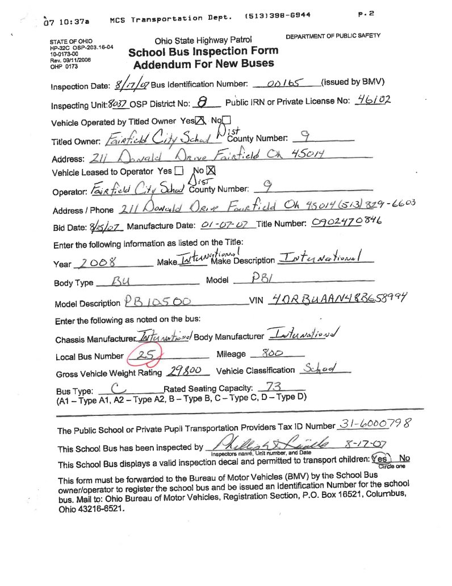
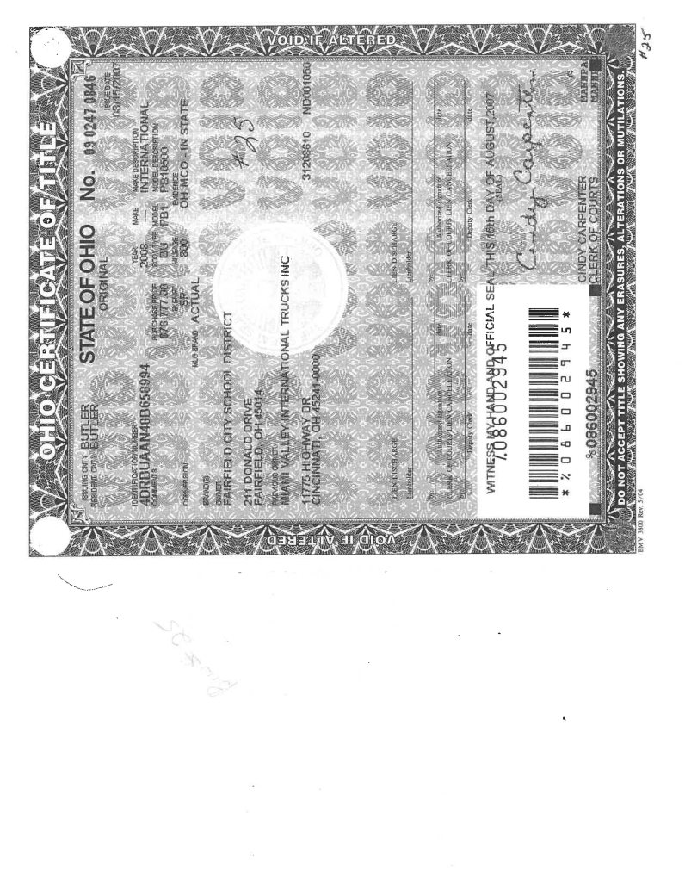
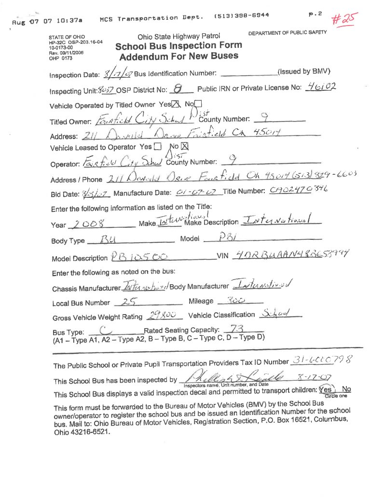
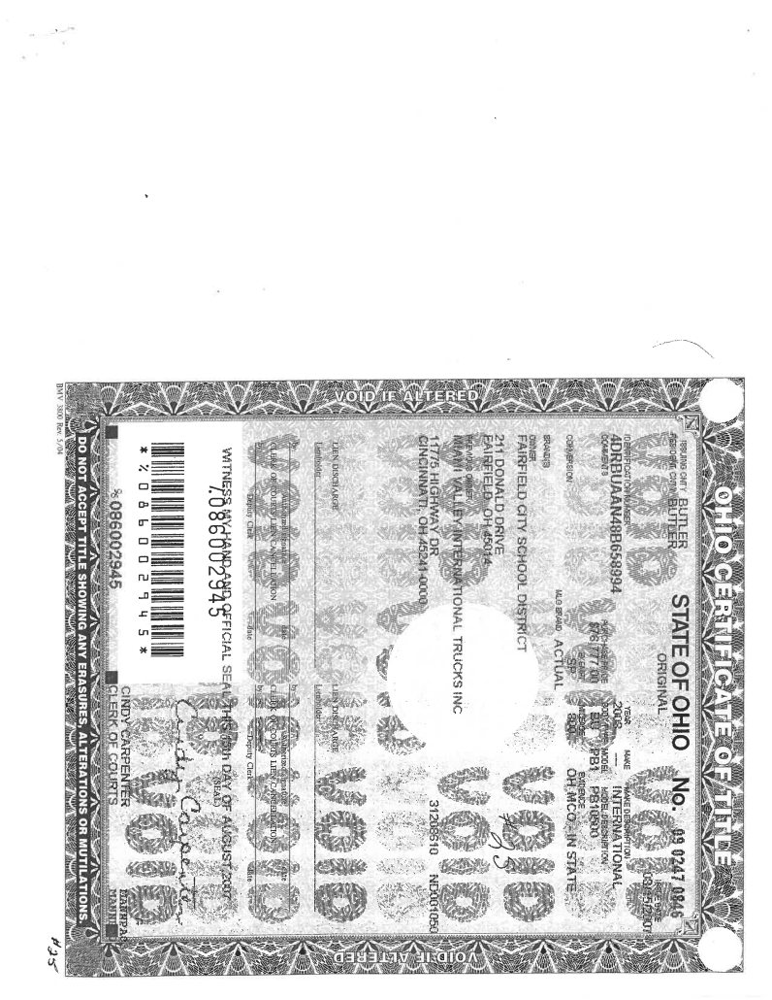

Source exhibit
Bus 25 - State ID 00165.pdf
Source SHA-256: 8ca2683e6e80a091ac40476d1c86879afa9a2e4a303e9d579df0025e0b78c4b7
Page 1

Page 2

Page 3

Page 4

Page 5

Page 6

Source SHA-256: 8ca2683e6e80a091ac40476d1c86879afa9a2e4a303e9d579df0025e0b78c4b7





